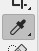
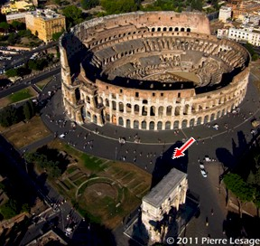
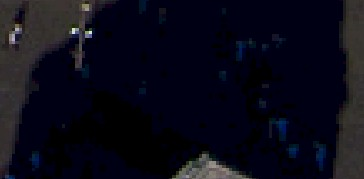
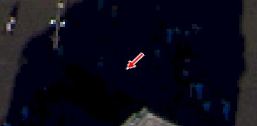
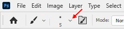
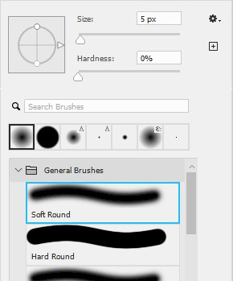
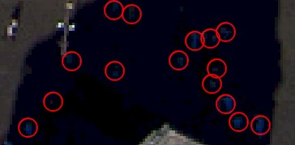
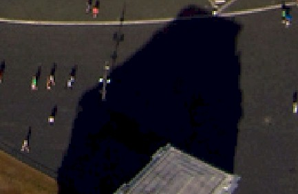
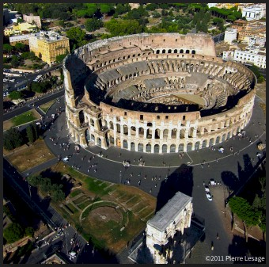
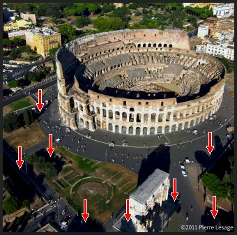

|
Introduction |
Method 1: Brush/Pencil | Method
2: Spot Healing Brush | Method 3: Healing Brush | Method
4:
Patch | Method 5: Content-Aware Move |
| Method 1: Brush/Pencil Tool |
In this step, we will use the Brush/Pencil Tool to make very basic adjustments to our image. The Brush and Pencil Tools work in the same way, and either tool can actually be used in this Step, though I will specifically ask you to use the Brush Tool because it has a softer edge and generally makes items in a photograph blend in better than the Pencil Tool. If we were working with a graphic such as a company logo or billboard, then the Pencil Tool would likely be more appropriate because it draws with a hard edge. The Brush/Pencil Tool works just like using a paintbrush in real life. Whatever part of the image you paint on is replaced with the currently selected color. Let's start by selecting a color from our image that we can use to begin removing people.




Let's choose a brush with a soft edge to allow our colors to blend in.






Let's save our work up to this point.
Using the Brush/Pencil Tool is one of the quickest and easiest ways to remove an object from an image. The problem is that it only works in situations similar to what we did - when the object is being removed from an area that is all pretty much the same color and is very small. In the next step, we will let Photoshop handle removing an object by extending the surrounding area to cover the object.